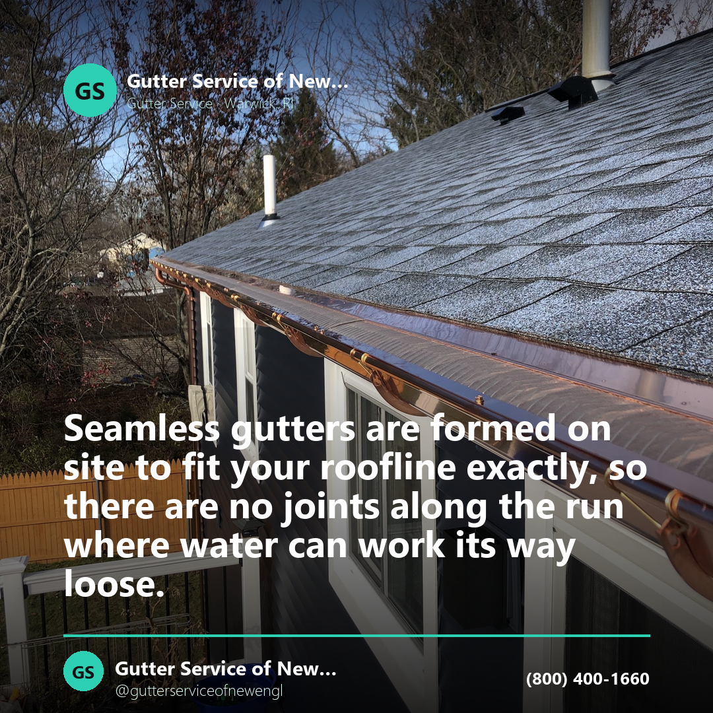
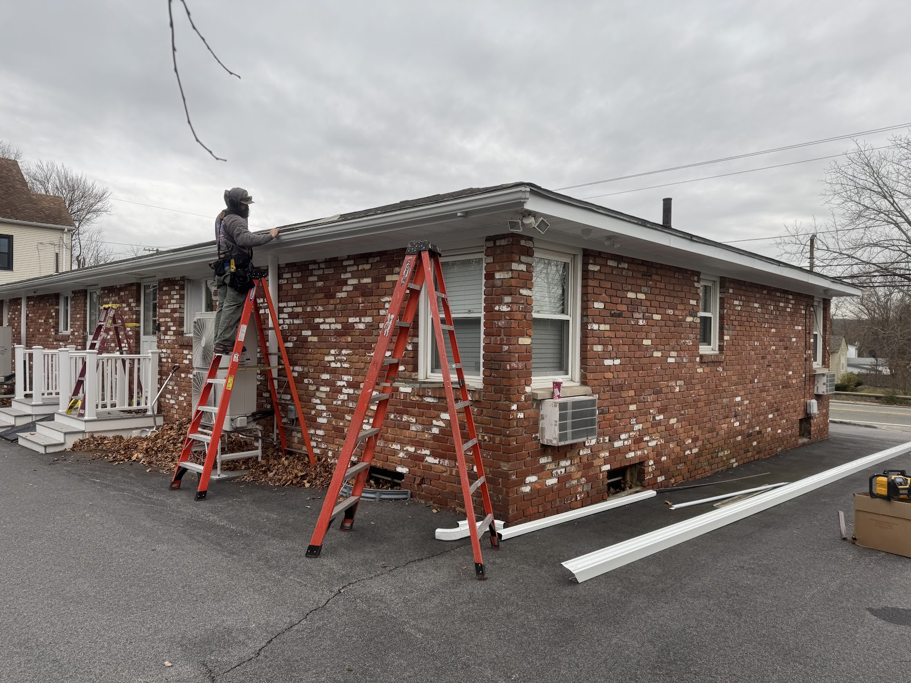
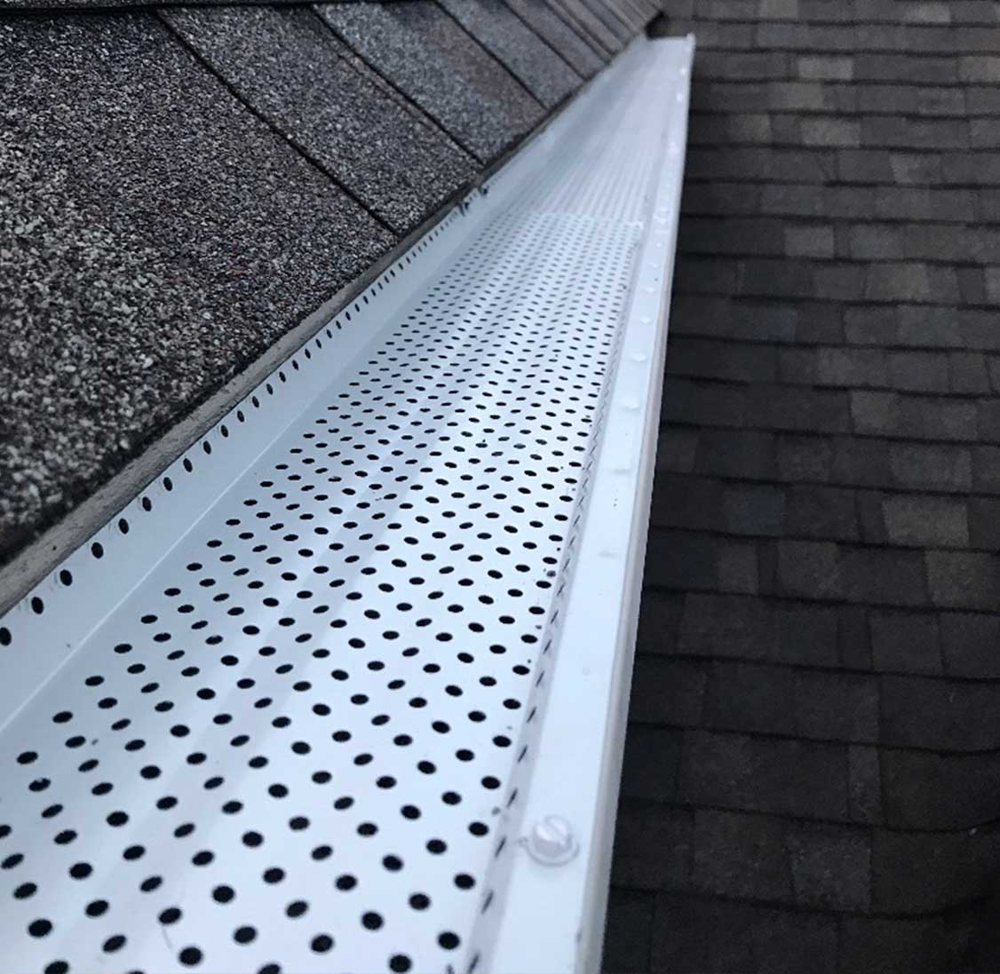
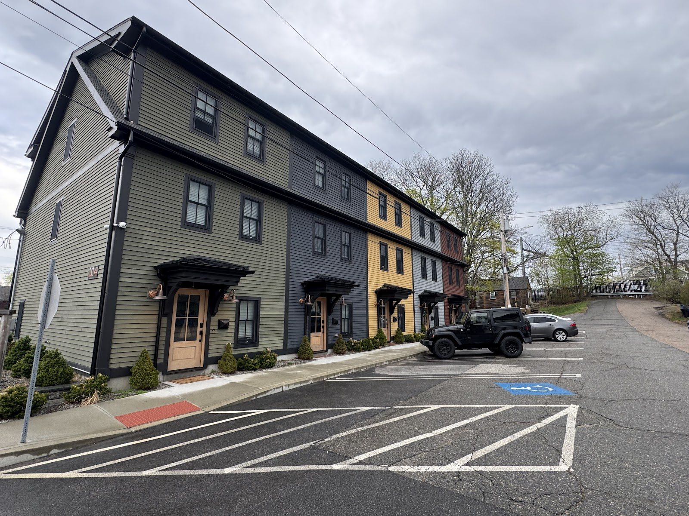

education · Facebook
Seamless gutters are formed on site to fit your roofline exactly, so there are no joints along the run where water can work its way loose. Fewer seams, fewer places to fail. That is the whole idea.
Seamless gutters, guards, fascia and soffit — plus siding and roofing — from a company Michael Taraksian founded in 2009 and still rides the truck for. Every gutter job carries his personal 10-year labor warranty.
Most gutter companies carry one metal in two sizes. We are a full-service gutter company, which means the profile and the material get chosen for the house instead of for the truck. Here is the whole list.
Michael Taraksian founded the company in 2009 after ten years in the gutter, gutter guard and roofing trades. He hired his crews and trained them himself, on one rule.
“When you arrive at the customers home treat it has though it is your own.”
Michael's personal labor warranty on all gutter work — described on their own site as “a testament to his confidence in himself and his crews.”

Roofing and siding were added to the gutter company after years of roofing experience and working alongside siding companies. Same crews, same motto, same attention to warranty.
A wide variety of the highest quality siding materials, installed to the strictest guidelines.
A wide variety of the highest quality roofing materials, installed to the strictest guidelines — the trade Michael came up in before he started the company.


“Professional team. Efficient work completed in one day. Pleasant staff. The workmanship was as stated and I am extremely satisfied with my new gutters!”
“This is the second time I have used them and would recommend them to anyone who needs gutters. Great service, great price and no surprises!”
“The gutters looks great, quick installation and from the quote to the labor, this project went very smoothly. Very happy with my gutters and the quality service.”
Tell us the house, the trouble spot, and whether you want guards on it. We will price the gutter, the profile and the material that actually suits the roof.
800-400-1660Content